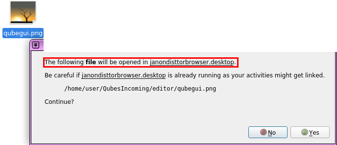
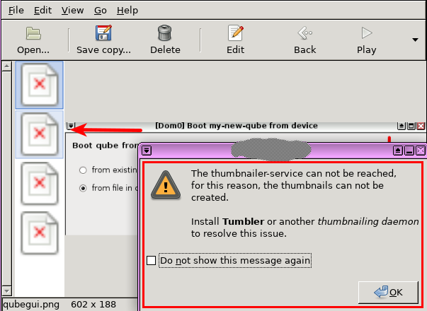

Testers wanted!
Let’s test these templates!
- https://github.com/QubesOS/updates-status/issues/1174
- https://github.com/QubesOS/updates-status/issues/1175
Alternatively:
Other Whonix platforms version 15:
See Whonix News Blog

Testers wanted!
Let’s test these templates!
Alternatively:
Other Whonix platforms version 15:
See Whonix News Blog
A post was split to a new topic: Whonix Repository Tool should remember existing repository suite setting and onion vs clearnet setting
Testers wanted!
Let’s test these templates!
Alternatively:
Other Whonix platforms version 15:
See Whonix News Blog
Can whonix-15 builds prior to 4.0.1-201906232114 be upgraded in-place, or should they be re-downloaded? (for example, the initial whonix-15 build back in May).
I don’t remember any Qubes-Whonix 15 TemplateVM builds prior this. At least no call for testers where posted as far as I can see.
So not directly tested. But would probably work.
I keep upgrading my own TemplateVMs from version to version and it works. However, upgraded builds cannot be excepted the same quality as new builds (there could be some bugs specific to upgraded versions only) since it’s not feasible to test any ever released version to be upgraded to any new version.
If upgrades are received by the time these are up to date, chances are much better if you follow the herd. But upgrading from like Whonix 13 to Whonix 15 might work but cannot be tested by me.
Mos likely not a Whonix specific issue. Icedove was renamed to Thunderbird. Hence ~/.icedove became ~/.thunderbird. Please read the actual error messages. It gives clues on how to resolve this issue.
unlink ~/.thunderbird
Or just do the profile folder migration manually.
Instructions https://www.whonix.org/wiki/Onionizing_Repositories#Onionize_qubes-r4.list_2 say use tor+http See bold text below.
deb [arch=amd64] tor+http://deb.qubesosfasa4zl44o4tws22di6kepyzfeqv3tg4e3ztknltfxqrymdad.onion/r4.0/vm buster main
Above screenshot uses http and onion only. That is not tor+http. Otherwise please contents of related sources.list file referencing Qubes onion.
I can see that but should be resolved for the next build/update to make it work out of the box.
because thats what it comes with whonix and so as all templates , Qubes onion repos are not tor+http in qubes sources.list, So either should be fixed in whonix only OR Qubes should fix that in their sources.list in all templates.
Otherwise user should do that manually , means manually shifting to Onion repos and manually adding tor+ before http for the onion repos of qubes which unfriendly task for new comers.


This is Whonix specific issue , Thunderbird running ok with plain Debian. Thunderbird cant be started from terminal/graphical icon, The only way to make it running is through firetools which will not be available by default.
Upgrade Thunderbird before ever starting it.
When new builds become available these will have upgraded Thunderbird with new folder location.
{kind=link}
{kind=link}
{kind=link}